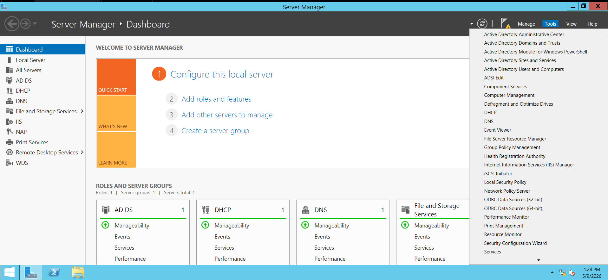

Diana Trisha Agustin
Server Specialist
Led server requirements implementation including Active Directory setup, DHCP configuration, and domain controller deployment across all 40 workstations.
A computer laboratory network system using Active Directory, DHCP, and Group Policy for managing 40 workstations.
Comprehensive Windows Server 2012 deployment featuring Active Directory Domain Services, DHCP, Group Policy Objects, roaming profiles, printer sharing, and remote administration for a production computer laboratory environment.

Led server requirements implementation including Active Directory setup, DHCP configuration, and domain controller deployment across all 40 workstations.
Designed and developed the project presentation website with modern UI/UX, responsive design, and interactive animations.
Implemented client-side requirements including workstation assignments, Group Policy deployment, and user restrictions.
Authored comprehensive technical documentation, procedures, and reflection for all 16 project requirements.
Click each requirement to view full procedures and implementation details:
Configure server as Domain Controller and join all 40 client computers to the domain.
Click here to see the procedure →Assign static IP to server and configure DHCP for automatic client IP distribution.
Click here to see the procedure →Create teacher and student accounts organized using Organizational Units (OUs).
Click here to see the procedure →Schedule automatic shutdown of all client computers at 11:30 AM daily.
Click here to see the procedure →Restrict user login based on assigned class schedules.
Click here to see the procedure →Limit students to their assigned computer only.
Click here to see the procedure →Create secure home folders with 100MB storage limit.
Click here to see the procedure →Allow teachers limited control over student accounts in their class.
Click here to see the procedure →Enable server-based application delivery using RDS.
Click here to see the procedure →Disable shutdown and restart options for student accounts.
Click here to see the procedure →Enable roaming profiles with restricted desktop settings.
Click here to see the procedure →Restrict network access for selected classes and disable USB for students.
Click here to see the procedure →Enable customizable roaming profiles for teachers.
Click here to see the procedure →Allow remote management of the server using RDP and RSAT tools.
Click here to see the procedure →Configure shared printer with class-based priority and scheduling.
Click here to see the procedure →Deploy operating systems remotely using WDS or RIS.
Click here to see the procedure →
This project provided our group with hands-on experience in designing and managing
a complete Windows Server 2012 network infrastructure for a 40-computer laboratory.
We successfully configured Active Directory Domain Services (AD DS), DNS, DHCP,
Organizational Units, Group Policy Objects, roaming profiles, printer sharing,
remote administration, and other enterprise-level services.
One of the most important lessons we learned was the critical role of DNS in
Active Directory. We discovered that domain joining and user authentication
depend heavily on proper DNS configuration. Incorrect IP addressing or DNS
settings often caused clients to fail when locating the domain controller.
Through troubleshooting, we developed a better understanding of how network
services interact within a domain environment.
We also gained practical knowledge in using Group Policy to centrally manage
user and computer settings. By implementing password policies, desktop
restrictions, USB blocking, automatic shutdown, and wallpaper enforcement,
we saw how administrators can maintain security and consistency across all
client workstations from a single management console.
Configuring roaming profiles, home folders, and NTFS permissions taught us
the importance of access control and resource management. We learned how to
apply the principle of least privilege to ensure that students and teachers
only accessed the files and resources assigned to them.
This project also improved our troubleshooting skills. We encountered issues
such as domain join failures, DHCP scope misconfigurations, profile permission
errors, and Group Policy settings not applying correctly. Resolving these
problems required careful testing, log analysis, and repeated verification.
Overall, this project strengthened our technical skills in Windows Server
administration and gave us a deeper appreciation for the responsibilities of
a system administrator. We now have a clearer understanding of how enterprise
networks are planned, secured, deployed, and maintained in real-world
educational environments.
We successfully completed all sixteen project requirements, including both
bonus requirements: Remote Desktop Services and Remote OS Deployment using
Windows Deployment Services (WDS). This achievement demonstrates our ability
to design, implement, and manage a fully functional enterprise network
environment using Windows Server 2012.